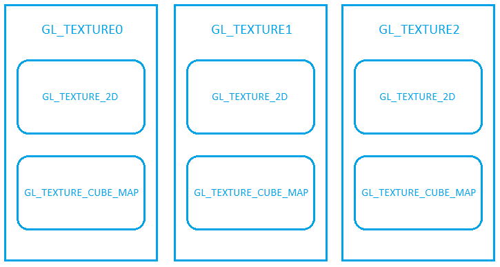
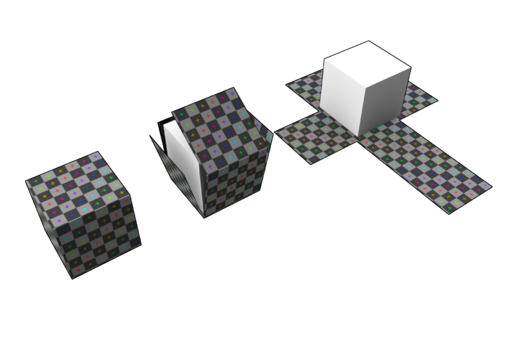
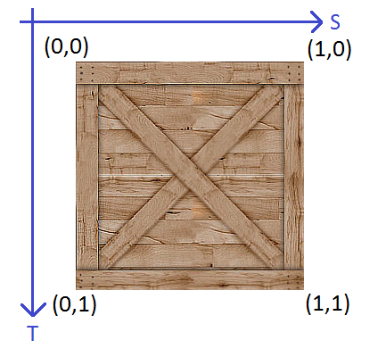
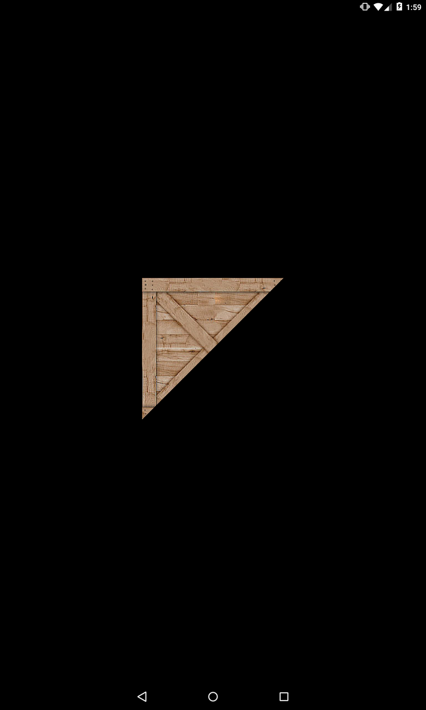
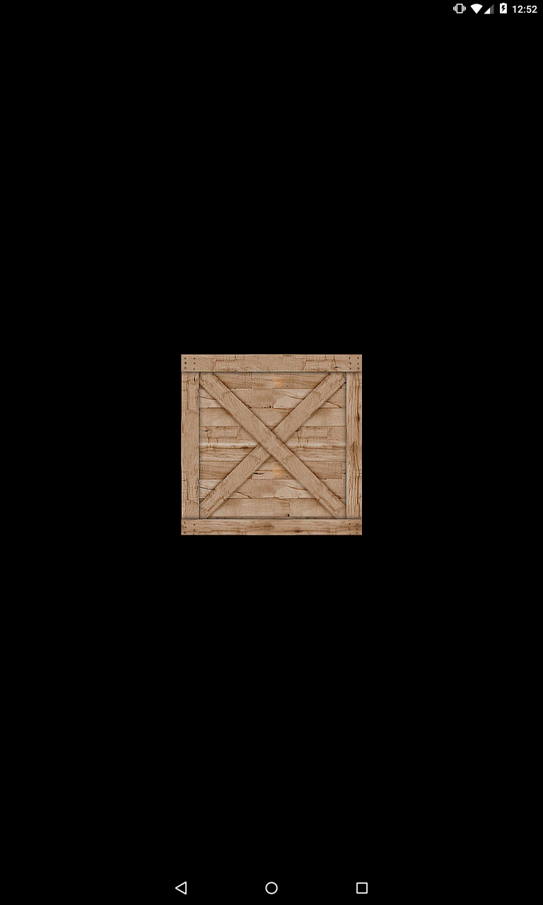
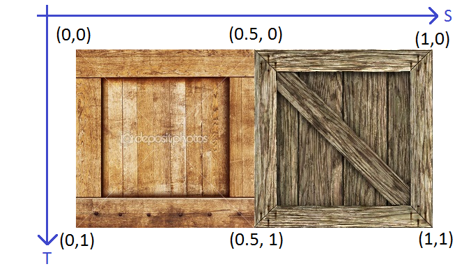
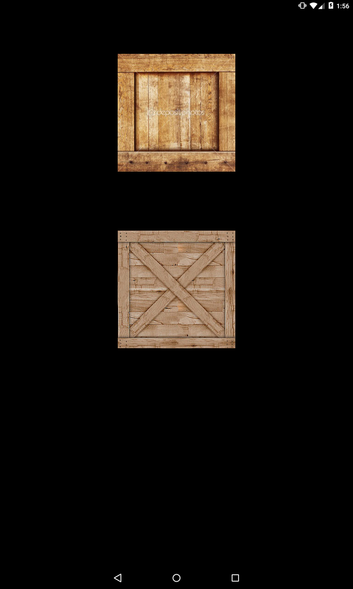
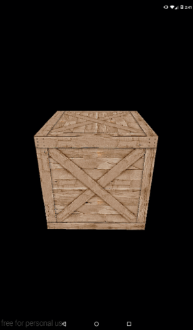

В этом уроке:
- используем текстуры
В прошлых уроках мы рисовали цветные треугольники. В этом уроке заменим цвет на текстуру. Мы можем взять любую картинку и сказать системе, чтобы она "наложила" эту картинку на треугольник вместо простой заливки цветом.
Прежде чем перейдем к практике, нам надо будет обсудить два основных момента при работе с текстурами:
- как из обычной картинки получить текстуру, готовую к работе в OpenGL
- как наложить текстуру на треугольник
Создание текстуры из картинки
Начнем с того, как нам картинку передать в OpenGL. Для этого нам придется освоить три понятия: texture unit, texture target, texture object.
Texture object – объект текстуры, который хранит в себе текстуру и некоторые ее параметры. Особенности работы с OpenGL таковы, что вы не можете просто так взять и отредактировать этот объект, или использовать его чтобы вывести на экран. Вам необходимо поместить его в определенный слот. И тогда вы сможете этот объект текстуры изменять или использовать в вашем изображении.
Слоты выглядят примерно так

Каждый большой прямоугольник с подписью GL_TEXTURE<N> (где N = 0,1,2…) – это texture unit. GL_TEXTURE<N> - это имя константы, по которой к нему можно обратиться. Я нарисовал всего три юнита, но их больше.
Каждый маленький прямоугольник внутри большого – это texture target. Его еще можно назвать типом текстуры. И насколько я понял, в OpenGL ES всего два типа:
GL_TEXTURE_2D – обычная двумерная текстура
GL_TEXTURE_CUBE_MAP – текстура развернутого куба. Т.е. это вот такая штука, состоящая из 6-ти квадратов

Мы в этом уроке будем использовать GL_TEXTURE_2D.
Чтобы работать с объектом текстуры, его надо поместить в target какого-либо юнита. Далее наша работа будет идти уже с этим target. А он уже будет менять объект текстуры.
Т.е. чтобы нам использовать какую-либо 2D картинку как текстуру на экране, надо будет проделать следующие шаги.
1) Прочесть картинку в Bitmap
2) Создать объект текстуры
3) Сделать какой-нибудь юнит активным. Все дальнейшие действия по работе с текстурами система будет выполнять в этом юните. По умолчанию, активен юнит GL_TEXTURE0.
4) Поместить созданный объект текстуры (из п.2.) в какой-либо texture target. В наших примерах обычно это будет GL_TEXTURE_2D. Далее по тексту буду использовать именно этот target. Помещаем объект в target, чтобы иметь возможность работать с этим объектом. Теперь все операции, которые хотим проделать с объектом мы будем адресовать в target.
5) Объект текстуры у нас создан, но не настроен. Нам надо сделать две вещи: закинуть в него Bitmap (из п.1.) и настроить фильтрацию. Фильтрация отвечает за то, какие алгоритмы будут использованы если текстуру приходится сжимать или растягивать, чтобы вывести ее на экран.
Напоминаю, что напрямую с объектом текстуры мы не работаем. Но этот объект уже лежит в target, и мы будем работать с target, а он уже донесет всю информацию до объекта текстуры.
Т.е. для GL_TEXTURE_2D надо указать необходимые режимы фильтрации и передать в него Bitmap. После этого наш объект текстуры будет готов. Можно переходить к шейдеру.
6) Работать с текстурой будет фрагментный шейдер. Именно он отвечает за заполнение фигур пикселами. Только теперь вместо простого цвета он будет определять какую точку из текстуры надо отображать для каждой точки треугольника.
Чтобы шейдер знал какую именно текстуру ему надо использовать, нам надо передать ему эту информацию. Логичнее всего, казалось бы, просто передать в него объект текстуры. Но, к сожалению, все устроено чуть сложнее, чем нам хотелось бы. И в шейдер мы будем передавать не объект текстуры, а номер юнита, в котором сейчас эта текстура находится.
Но мы помним, что текстура находится не просто в юните, но еще и в target. Как тогда шейдер поймет, в каком target указанного юнита ему следует искать текстуру? Это будет зависеть от того, какой тип переменной мы используем в шейдере для представления текстуры. Мы в нашем примере будем использовать тип sampler2D. И благодаря этому типу шейдер поймет, что ему надо брать текстуру из target GL_TEXTURE_2D.
Мы все это чуть дальше разберем на примере. Сейчас, самая главная мысль, которую надо понять – это то, что мы не работаем напрямую с объектом текстуры. Мы помещаем его в определенный target определенного юнита. После этого, мы можем его там менять через target, и фрагментный шейдер может оттуда его взять для вывода на экран.
Использование текстуры
Теперь вторая важная теоретическая часть. Нам нужно понять, как текстура будет «натянута» на объект. Рассмотрим на самом простом примере. У нас есть квадрат, который мы нарисовали с помощью двух треугольников.
![]()
Для упрощения я здесь использую только X и Y координаты. Z здесь не важен абсолютно.
Итак, для рисования квадрата мы использовали 4 вершины. Чтобы на этот квадрат наложить текстуру, нам надо сопоставить вершины квадрата и координаты текстуры.
Текстуру можно представить в таком виде

Т.е. каждая сторона текстуры считается равной 1 (даже если стороны не равны). И используя эти S и T координаты мы можем указать на любую точку текстуры.
Если мы хотим повесить текстуру на наш квадрат, нам надо просто сопоставить углы квадрата и углы текстуры. Т.е. для каждой вершины квадрата надо указать точку текстуры, которая будет соответствовать этой вершине.
В нашем примере мы сопоставим координаты вершины квадрата и координаты точки текстуры следующим образом:
левая верхняя вершина (-1,1) -> левая верхняя точка текстуры (0,0)
левая нижняя вершина (-1,-1) -> левая нижняя точка текстуры (0,1)
правая верхняя вершина (1,1) -> правая верхняя точка текстуры (1,0)
правая нижняя вершина (1,-1) -> правая нижняя точка текстуры (1,1)
Таким образом мы вершинам квадрата сопоставили углы текстуры и, в результате, текстура ровно ляжет на квадрат и заполнит его целиком.
Тут надо понимать, что текстура будет наложена не на квадрат, а на два треугольника. Ведь мы изображение строим из треугольников. На один треугольник будет наложена одна часть текстуры, а на другой треугольник – вторая часть. В итоге, две части текстуры на двух треугольниках будут выглядеть как целая текстура на квадрате.

Ну и логично предположить, что, если шейдеры будут заниматься сопоставлением вершин треугольника и координат текстуры, то нам необходимо будет в шейдеры эти данные передавать. Данные о вершинах мы и так уже обычно передаем, а в этом уроке будем добавлять к ним координаты текстур. Когда шейдер получит эти данные он будет знать, какой вершине какая точка текстуры соответствует. А для всех остальных точек треугольника (которые находятся между вершинами) соответствующие им точки текстуры будут рассчитаны интерполяцией.
Этот механизм схож с тем, что мы рассматривали в Уроке 171, когда рисовали градиент. Там мы для каждой вершины указывали цвет, а фрагментный шейдер интерполировал их между вершинами, и мы получали градиент. В случае с текстурой, фрагментный шейдер будет рассчитывать не цвет, а координаты текстуры.
Давайте смотреть код, в котором будет реализовано все то, что мы обсудили. Скачивайте исходники и открывайте модуль lesson175_texture.
Сначала посмотрим на класс TextureUtils. В нем есть метод loadTexture. Этот метод принимает на вход id ресурса картинки, а на выходе вернет нам id созданного объекта текстуры, который будет содержать в себе эту картинку. Разберем этот метод подробно.
Методом glGenTextures создаем пустой объект текстуры. В качестве параметров передаем:
- сколько объектов необходимо создать. Нам нужна одна текстура, указываем 1.
- int массив, в который метод поместит id созданных объектов
- offset массива (индекс элемента массива, с которого метод начнет заполнять массив). Тут, как обычно, передаем 0.
Проверяем, если id равен 0, значит что-то пошло не так и объект текстуры не был создан. Возвращаем 0.
Далее идут методы по получению Bitmap из ресурса. Подробно об этом можно почитать в уроках 157-159.
Если Bitmap получить не удалось, то удаляем объект текстуры методом glDeleteTextures. В качестве параметров передаем:
- сколько объектов надо удалить. Нам надо удалить 1 объект.
- массив с id объектов
- offset массива (индекс элемента массива, с которого метод начнет читать массив). Снова 0.
Далее начинается работа с юнитами и target. Методом glActiveTexture делаем активным юнит GL_TEXTURE0, т.е. юнит с номером 0. Теперь все дальнейшие операции будут адресоваться этому юниту. А вот target надо будет указывать в каждой операции.
Методом glBindTexture мы в target GL_TEXTURE_2D помещаем наш объект текстуры, передав туда его id. Заметьте, мы указали только target, без юнита. Потому что юнит мы уже задали одной строкой ранее и система, получив только target, работает с этим target в активном юните.
Методом glTexParameteri мы можем задать параметры объекта текстуры. У этого метода есть три параметра:
- target
- какой параметр будем менять
- значение, которое хотим присвоить этому параметру
В нашем примере мы используем метод glTexParameteri, чтобы задать параметры фильтрации. Напомню, что фильтрация используется, когда размер треугольника не совпадает с размером текстуры, и текстуру приходится сжимать или растягивать, чтобы она ровно села на треугольник.
Существует два параметра фильтрации, которые нам необходимо задать:
GL_TEXTURE_MIN_FILTER - какой режим фильтрации будет применен при сжатии изображения
GL_TEXTURE_MAG_FILTER - какой режим фильтрации будет применен при растягивании изображения
Обоим этим параметрам мы ставим режим GL_LINEAR. Что означает этот режим и какие еще бывают режимы, я вкратце опишу в конце этого урока, чтобы сейчас не отвлекаться.
Методом texImage2D мы передаем bitmap в объект текстуры. Тут мы указываем target и ранее созданный bitmap. Остальные два параметра оставляем 0, они для нас пока не важны.
Методом recycle мы сообщаем системе, что bitmap нам больше не нужен.
И напоследок снова вызываем метод glBindTexture, в котором в target GL_TEXTURE_2D передаем 0. Тем самым, мы отвязываем наш объект текстуры от этого target.
Т.е. мы сначала поместили объект текстуры в target, выполнили все операции с ним, а затем освободили target. В результате объект текстуры у нас теперь настроен, готов к работе и не привязан ни к какому target.
Смотрим класс OpenGLRenderer. Тут по сравнению с прошлыми уроками есть немного изменений, не касающихся работы с текстурами. Я вынес код по созданию шейдеров и программы в отдельный метод createAndUseProgram. А в метод getLocations я вынес вызовы методов, которые возвращают нам положение переменных в шейдере.
Теперь смотрим новшества, касающиеся текстур. Т.е. что и как мы делаем, чтобы использовать текстуру. Напомню вкратце, что от нас требуется:
1) Создать объект текстуры из картинки
2) Сопоставить вершины треугольника и координаты текстуры, и передать эти данные в шейдер, чтобы он знал как, ему следует наложить текстуру на треугольник.
3) Поместить объект текстуры в target какого-нибудь юнита
4) Передать в шейдер номер юнита, в котором сейчас находится объект текстуры
Смотрим метод prepareData. В массиве vertices мы задаем данные о 4 вершинах, чтобы нарисовать квадрат. Для каждой вершины мы задаем 5 чисел. Первые три – это координаты вершины, а последние две – это координаты соответствующей точки текстуры.
В переменную texture мы помещаем id объекта текстуры, созданного из картинки box.
В методе getLocations обратите внимание на две новые переменные из шейдеров:
a_Texture – это атрибут в вершинном шейдере. В него будем передавать координаты текстуры.
u_TextureUnit – это uniform переменная, в нее будем передавать номер юнита, в который мы поместим текстуру.
В методе bindData сначала передаем координаты вершин в aPositionLocation. Затем передаем координаты текстуры в aTextureLocation. Т.е. из одного массива мы передаем данные в два атрибута. Мы такое уже делали в Уроке 171. Если вдруг забыли, можно там посмотреть, я очень подробно все расписывал.
Методом glActiveTexture мы делаем активным юнит 0. Он и так по умолчанию активный, но вдруг мы где-то в коде это меняли и делали активным какой-нибудь другой юнит. Поэтому на всякий случай выполняем эту операцию.
Методом glBindTexture помещаем объект текстуры в target GL_TEXTURE_2D.
Методом glUniform1i передаем шейдеру информацию о том, что текстуру он сможет найти в юните 0.
В методе onDrawFrame просим систему нарисовать нам треугольники из 4 вершин. В результате будет нарисован квадрат и на него будет "наложена" текстура.
Теперь смотрим на шейдеры.
Сначала вершинный шейдер vertex_shader.glsl. Здесь мы, как и ранее, вычисляем итоговые координаты (gl_Position) для каждой вершины с помощью матрицы. А в атрибут a_Texture у нас приходят данные по координатам текстуры. И мы их сразу пишем в varying переменную v_Texture. Это позволит нам в фрагментном шейдере получить интерполированные данные по координатам текстуры.
Фрагментный шейдер fragment_shader.glsl. В нем у нас есть uniform переменная u_TextureUnit, в которую мы получаем номер юнита, в котором находится нужная нам текстура. Обратите внимание на тип переменной. Напомню, что из приложения мы в эту переменную передавали 0, как integer. А тут у нас какой-то сложный тип sampler2D. Меня это немного запутало поначалу, и пришлось покопать этот момент. В итоге я пришел к выводу, что, когда система передает 0 в шейдер в тип sampler2D, она смотрит в юнит 0 и в sampler2D помещает содержимое текстуры из target GL_TEXTURE_2D.
Т.е. переданное в шейдер число (а нашем случае 0) указывает на какой юнит смотреть. А тип переменной, в которую передано это число (в нашем случае sampler2D) указывает из какого target надо брать текстуру (из 2D target). Естественно это сработает, только, если вы поместили туда текстуру методами glActiveTexture и glBindTexture.
В varying переменную v_Texture приходят интерполированные координаты текстуры из вершинного шейдера. И шейдер знает, какую точку текстуры надо отобразить в текущей точке треугольника.
Осталось использовать координаты текстуры и саму текстуру, чтобы получить итоговый фрагмент. Это выполнит метод texture2D, и в gl_FragColor мы получим цвет нужной точки из текстуры.
Запускаем приложение

Текстура ровно легла на квадрат. Вернее, части текстуры легли на треугольники и в результате мы видим квадрат.
Частичное использование текстуры
Мы в примере использовали всю текстуру от (0,0) до (1,1). Но это вовсе не обязательно. Мы вполне можем использовать лишь часть.
Давайте рассмотрим такую картинку

В ней содержатся две картинки. А для квадрата нужна только одна, например та, которая находится слева, до 0.5. Чтобы нам ее «наложить» на квадрат, нужно просто поменять сопоставление вершин и точек текстуры. Теперь правые вершины квадрата будут сопоставляться не с правыми углами картинки, а с серединой.
Давайте выведем на экран еще один квадрат с этой левой половиной текстуры
Дополним массив vertices:
float[] vertices = {
-1, 1, 1, 0, 0,
-1, -1, 1, 0, 1,
1, 1, 1, 1, 0,
1, -1, 1, 1, 1,
-1, 4, 1, 0, 0,
-1, 2, 1, 0, 1,
1, 4, 1, 0.5f, 0,
1, 2, 1, 0.5f, 1,
};
К 4-м вершинам мы добавили еще 4. Это тоже квадрат, который будет нарисован повыше первого. Координаты текстур для него соответствуют левой половине текстуры.
Т.к. мы будем использовать еще одну текстуру, надо в классе OpenGLRenderer создать еще одну переменную
private int texture2;
В метод prepareData добавим код создания второго объекта текстуры
texture2 = TextureUtils.loadTexture(context, R.drawable.boxes);
Перепишем onDrawFrame
public void onDrawFrame(GL10 arg0) {
glClear(GL_COLOR_BUFFER_BIT | GL_DEPTH_BUFFER_BIT);
glBindTexture(GL_TEXTURE_2D, texture);
glDrawArrays(GL_TRIANGLE_STRIP, 0, 4);
glBindTexture(GL_TEXTURE_2D, texture2);
glDrawArrays(GL_TRIANGLE_STRIP, 4, 4);
}
Здесь мы просим систему нарисовать треугольники сначала из первой четверки вершин, затем из второй четверки вершин. Каждая четверка даст нам по квадрату. А перед рисованием каждого квадрата, мы помещаем соответствующую ему текстуру в target, чтобы шейдер для первого квадрата использовал первую текстуру, а для второго квадрата – вторую.
Запускаем

Видим еще один квадрат. Шейдер использовал не всю текстуру, а ее левую половину, т.к. мы указали ему это координатами в массиве vertices.
Напоследок еще немного теории
Несколько юнитов
Зачем может быть нужно несколько юнитов? Бывают случаи, когда фрагментный шейдер должен использовать сразу несколько текстур, чтобы получить итоговый фрагмент. Тогда ему никак не обойтись без нескольких юнитов, в target-ы которых помещены разные текстуры.
Получить кол-во доступных вам юнитов можно методом glGetIntegerv
glGetIntegerv(GL_MAX_TEXTURE_IMAGE_UNITS, cnt, 0);
Где, cnt – это массив int[] из одного элемента. В итоге, int[0] будет хранить в себе кол-во юнитов.
Режимы фильтрации
Давайте поговорим чуть подробнее про фильтрацию. Что это такое, когда применяется, какие режимы фильтрации существуют?
Итак, нам надо текстуру "натянуть" на треугольник. Точка треугольника называется - фрагмент (отсюда и название фрагментного шейдера, который должен отрисовать каждый фрагмент треугольника). А точка текстуры называется - тексель. Когда текстура накладывается на треугольник, их размеры могут не совпадать, и системе приходится подгонять размер текстуры под размер треугольника. Т.е. впихивать несколько текселей в один фрагмент (minification), если текстура больше треугольника. Либо растягивать один тексель на несколько фрагментов (magnification), если текстура меньше. В этом случае применяется фильтрация, чтобы получить итоговый фрагмент.
Есть два основных режима фильтрации изображения:
NEAREST – для каждого фрагмента просто берется ближайший тексель. Работает быстро, но качество хуже.
LINEAR – для каждого фрагмента берется 4 ближайших текселя и рассчитывается их среднее значение. Медленнее скорость, но лучше качество.
В дополнение к фильтрации может быть применен mipmapping. Он для текстуры создает несколько копий разных размеров - от оригинального до совсем минимального. При выполнении фильтрации берется копия текстуры, которая по размерам ближе всего к треугольнику. Это обеспечит лучшее качество и может ускорить процесс, но увеличивает расход памяти, т.к. вам надо держать в памяти несколько уменьшенных копий текстуры. Подробнее можно посмотреть тут.
Чтобы задействовать mipmapping, необходим такой код:
glGenerateMipmap(GL_TEXTURE_2D);
Вызывайте его сразу после того, как поместили bitmap в текстуру. Для гарантированного результата, ваша текстура должна иметь POT (power of two) размеры. Т.е. ширина и высота текстуры должны быть равны какой-либо степени двойки: 1, 2, 4, 8, 16, 32 и т.п. Максимальный размер – 2048. При этом текстура не обязана быть квадратной, т.е. ширина может быть не равна высоте, главное, чтобы оба значения были POT.
Существует два способа, как mipmapping может быть использован при фильтрации:
MIPMAP_NEAREST – выбирается копия текстуры наиболее подходящая по размеру и к ней применяется фильтрация, чтобы получить итоговый фрагмент из текселей
MIPMAP_LINEAR – выбираются две копии текстуры наиболее подходящие по размеру, к обоим применяется фильтрация. От фильтрации каждой копии мы получаем по фрагменту, а в качестве итогового фрагмента берем их среднее значение.
Второй способ даст лучшее качество, но первый - быстрее.
Эти два способа подбора копий в комбинации с двумя ранее рассмотренными режимами фильтрации дают нам 4 режима фильтрации:
GL_NEAREST_MIPMAP_NEAREST – фильтрация NEAREST, выбор копии MIPMAP_NEAREST. Т.е. выбирается ближайшая копия текстуры, и к ней применяется NEAREST фильтрация.
GL_NEAREST_MIPMAP_LINEAR - фильтрация NEAREST, выбор копии MIPMAP_LINEAR. Т.е. выбираются две ближайших копии текстуры, и к каждой копии применяется NEAREST фильтрация. Итоговым результатом будет среднее от двух полученных фрагментов.
GL_LINEAR_MIPMAP_NEAREST - фильтрация LINEAR, выбор копии MIPMAP_NEAREST. Т.е. выбирается ближайшая копия текстуры, и к ней применяется LINEAR фильтрация.
GL_LINEAR_MIPMAP_LINEAR - фильтрация LINEAR, выбор копии MIPMAP_LINEAR. Т.е. выбираются две ближайших копии текстуры, и к каждой копии применяется LINEAR фильтрация. Итоговым результатом будет среднее от двух полученных фрагментов.
Итого мы получаем 6 возможных режимов фильтрации:
GL_NEAREST
GL_LINEAR
GL_NEAREST_MIPMAP_NEAREST
GL_LINEAR_MIPMAP_NEAREST
GL_NEAREST_MIPMAP_LINEAR
GL_LINEAR_MIPMAP_LINEAR
Первые два применимы и для minification и для magnification. Остальные четыре – только для minification.
Если снова взглянуть на наш код в методе loadTexture класса TextureUtils:
GLES20.glTexParameteri(GLES20.GL_TEXTURE_2D, GLES20.GL_TEXTURE_MIN_FILTER, GLES20.GL_LINEAR);
GLES20.glTexParameteri(GLES20.GL_TEXTURE_2D, GLES20.GL_TEXTURE_MAG_FILTER, GLES20.GL_LINEAR);
Мы настраиваем два параметра:
GL_TEXTURE_MIN_FILTER – параметр для задания режима фильтрации при minification GL_TEXTURE_MAG_FILTER – параметр для задания режима фильтрации при magnification
В обоих случаях задаем LINEAR фильтрацию.
Как сделать куб
Я в телеграмм-канал сайта скидывал картинку крутящегося ящика и написал, что вы после этого урока сами сможете такое сделать.

Для этого вам нужно будет немного доработать текущий код.
Для начала, отмените все изменения, которые мы внесли в процессе этого урока.
В моем примере есть только одна сторона куба, состоящая из двух треугольников. Вам надо будет дорисовать остальные 5 сторон. Т.е. добавить в массив вершин еще 10 треугольников и правильно сопоставить их с координатами текстуры. Ну и конечно, добавить их отрисовку в onDrawFrame
Текстуру можно для всех сторон использовать одну и ту же. Но если есть желание, можете поискать в инете еще текстуры и сделать куб с разными текстурами для каждой стороны. В этом случае вам надо будет для каждой текстуры создать объект текстуры и помещать его в target перед тем, как вызывать метод отрисовки треугольников соответствующей стороны куба.
А если хотите сделать поворот, то добавляйте model матрицу и настраивайте поворот вокруг оси Y. О том, как это сделать, мы говорили в прошлом уроке.